Trigonometria
25 Ângulos
Resumo do capítulo
O capítulo introduz a medida de ângulos em graus e radianos, a conversão entre essas unidades, e as fórmulas de comprimento de arco e de velocidade angular e linear associadas ao movimento circular.
Nos Exercícios 1 a 4, converta os ângulos para o sistema GMS. Arredonde cada uma de suas respostas para o segundo mais próximo.
- $63^{\circ} 45'$
- $200.325^{\circ}$resposta$200^{\circ} 19' 30''$
- $-317.06^{\circ}$resposta$-317^{\circ} 3' 36''$
- $179^{\circ} 59' 56''$
Nos Exercícios 5 a 8, converta os ângulos para graus decimais. Arredonde cada uma de suas respostas para três casas decimais.
- $125.833^{\circ}$
- $-32^{\circ} 10' 12''$resposta$-32.17^{\circ}$
- $502^{\circ} 35'$resposta$502.583^{\circ}$
- $237.979^{\circ}$
Nos Exercícios 9 a 28, represente graficamente o ângulo orientado em posição padrão. Classifique cada ângulo de acordo com onde se encontra o lado terminal e, em seguida, forneça dois ângulos côngruos, sendo um positivo e o outro negativo.
- $330^{\circ}$ é um ângulo do Quadrante IV
côngruo a $690^{\circ}$ e $-30^{\circ}$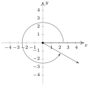
- $-135^{\circ}$resposta$-135^{\circ}$ é um ângulo do Quadrante III
côngruo a $225^{\circ}$ e $-495^{\circ}$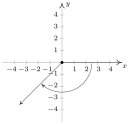
- $120^{\circ}$resposta$120^{\circ}$ é um ângulo do Quadrante II
côngruo a $480^{\circ}$ e $-240^{\circ}$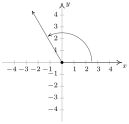
- $405^{\circ}$resposta$405^{\circ}$ é um ângulo do Quadrante I
côngruo a $45^{\circ}$ e $-315^{\circ}$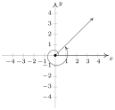
- $-270^{\circ}$resposta$-270^{\circ}$ está sobre o eixo $y$ positivo
côngruo a $90^{\circ}$ e $-630^{\circ}$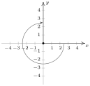
- $\dfrac{5\pi}{6}$resposta$\dfrac{5\pi}{6}$ é um ângulo do Quadrante II
côngruo a $\dfrac{17\pi}{6}$ e $-\dfrac{7\pi}{6}$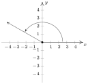
- $-\dfrac{11\pi}{3}$resposta$-\dfrac{11\pi}{3}$ é um ângulo do Quadrante I
côngruo a $\dfrac{\pi}{3}$ e $-\dfrac{5\pi}{3}$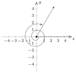
- $\dfrac{5\pi}{4}$resposta$\dfrac{5\pi}{4}$ é um ângulo do Quadrante III
côngruo a $\dfrac{13\pi}{4}$ e $-\dfrac{3\pi}{4}$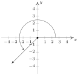
- $\dfrac{3\pi}{4}$resposta$\dfrac{3\pi}{4}$ é um ângulo do Quadrante II
côngruo a $\dfrac{11\pi}{4}$ e $-\dfrac{5\pi}{4}$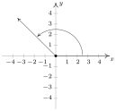
- $-\dfrac{\pi}{3}$resposta$-\dfrac{\pi}{3}$ é um ângulo do Quadrante IV
côngruo a $\dfrac{5\pi}{3}$ e $-\dfrac{7\pi}{3}$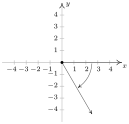
- $\dfrac{7\pi}{2}$resposta$\dfrac{7\pi}{2}$ está sobre o eixo $y$ negativo
côngruo a $\dfrac{3\pi}{2}$ e $-\dfrac{\pi}{2}$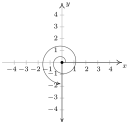
- $\dfrac{\pi}{4}$resposta$\dfrac{\pi}{4}$ é um ângulo do Quadrante I
côngruo a $\dfrac{9 \pi}{4}$ e $-\dfrac{7\pi}{4}$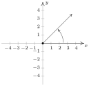
- $-\dfrac{\pi}{2}$resposta$-\dfrac{\pi}{2}$ está sobre o eixo $y$ negativo
côngruo a $\dfrac{3\pi}{2}$ e $-\dfrac{5\pi}{2}$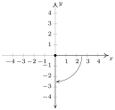
- $\dfrac{7\pi}{6}$resposta$\dfrac{7\pi}{6}$ é um ângulo do Quadrante III
côngruo a $\dfrac{19 \pi}{6}$ e $-\dfrac{5\pi}{6}$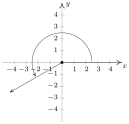
- $-\dfrac{5\pi}{3}$resposta$-\dfrac{5\pi}{3}$ é um ângulo do Quadrante I
côngruo a $\dfrac{\pi}{3}$ e $-\dfrac{11\pi}{3}$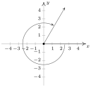
- $3\pi$resposta$3\pi$ está sobre o eixo $x$ negativo
côngruo a $\pi$ e $-\pi$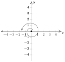
- $-2\pi$resposta$-2\pi$ está sobre o eixo $x$ positivo
côngruo a $2\pi$ e $-4\pi$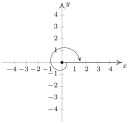
- $-\dfrac{\pi}{4}$resposta$-\dfrac{\pi}{4}$ é um ângulo do Quadrante IV
côngruo a $\dfrac{7 \pi}{4}$ e $-\dfrac{9\pi}{4}$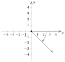
- $\dfrac{15\pi}{4}$resposta$\dfrac{15\pi}{4}$ é um ângulo do Quadrante IV
côngruo a $\dfrac{7\pi}{4}$ e $-\dfrac{\pi}{4}$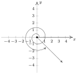
- $-\dfrac{13\pi}{6}$ é um ângulo do Quadrante IV
côngruo a $\dfrac{11\pi}{6}$ e $-\dfrac{\pi}{6}$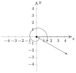
Nos Exercícios 29 a 36, converta o ângulo da medida em graus para a medida em radianos, fornecendo o valor exato em termos de $\pi$.
- $0$
- $240^{\circ}$resposta$\dfrac{4\pi}{3}$
- $135^{\circ}$resposta$\dfrac{3\pi}{4}$
- $-270^{\circ}$resposta$-\dfrac{3\pi}{2}$
- $-315^{\circ}$resposta$-\dfrac{7\pi}{4}$
- $150^{\circ}$resposta$\dfrac{5\pi}{6}$
- $45^{\circ}$resposta$\dfrac{\pi}{4}$
- $-\dfrac{5\pi}{4}$
Nos Exercícios 37 a 44, converta o ângulo da medida em radianos para a medida em graus.
- $180^{\circ}$
- $-\dfrac{2\pi}{3}$resposta$-120^{\circ}$
- $\dfrac{7\pi}{6}$resposta$210^{\circ}$
- $\dfrac{11\pi}{6}$resposta$330^{\circ}$
- $\dfrac{\pi}{3}$resposta$60^{\circ}$
- $\dfrac{5\pi}{3}$resposta$300^{\circ}$
- $-\dfrac{\pi}{6}$resposta$-30^{\circ}$
- $90^{\circ}$
Nos Exercícios 45 a 49, esboce o arco orientado na Circunferência Unitária que corresponde ao número real fornecido.
- $t = \dfrac{5\pi}{6}$
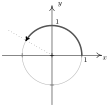
- $t=-\pi$resposta$t = -\pi$
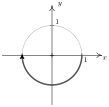
- $t = 6$resposta$t = 6$
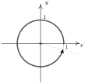
- $t = -2$resposta$t = -2$
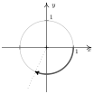
- $t = 12$ (entre 1 e 2 revoluções)
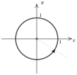
- Um ioiô com diâmetro de 2.25 polegadas gira a uma taxa de 4500 revoluções por minuto. Qual é a velocidade com que a borda do ioiô está girando em milhas por hora? Arredonde sua resposta para duas casas decimais.respostaCerca de 30.12 milhas por hora
- Quantas revoluções por minuto o ioiô do exercício 50 precisaria completar para que a borda do ioiô estivesse girando a uma taxa de 42 milhas por hora? Arredonde sua resposta para duas casas decimais.respostaCerca de 6274.52 revoluções por minuto
- No truque de ioiô 'Around the World', o artista lança o ioiô de modo que ele descreve um círculo vertical com raio igual ao da corda do ioiô. Se a corda do ioiô tem 28 polegadas de comprimento e o ioiô leva 3 segundos para completar uma revolução do círculo, calcule a velocidade do ioiô em milhas por hora. Arredonde sua resposta para duas casas decimais.respostaCerca de 3.33 milhas por hora
- Um disco rígido de computador contém um disco circular com diâmetro de 2.5 polegadas e gira a uma taxa de 7200 RPM (rotações por minuto). Encontre a velocidade linear de um ponto na borda do disco em milhas por hora.respostaCerca de 53.55 milhas por hora
- Uma pedra ficou presa na banda de rodagem do meu pneu e, quando eu estava dirigindo a 70 milhas por hora, a pedra soltou e atingiu a parte interna da lataria do carro. Qual era a velocidade, em milhas por hora, da pedra quando saiu da banda de rodagem? (O pneu tem um diâmetro de 23 polegadas.)resposta70 milhas por hora
- A Roda Gigante no Cedar Point é um círculo com diâmetro de 128 pés que repousa em uma plataforma com altura de 8 pés, fazendo com que sua altura total seja de 136 pés. Ela completa duas revoluções em 2 minutos e 7 segundos. Supondo que os passageiros estejam na borda do círculo, qual é a velocidade deles em milhas por hora?respostaCerca de 4.32 milhas por hora
- Considere o círculo de raio $r$ ilustrado abaixo com ângulo central $\theta$, medido em radianos, e arco subtendido de comprimento $s$. Prove que a área do setor sombreado é $A = \frac{1}{2} r^{2} \theta$.
(Dica: Use a proporção $\frac{A}{\text{área do círculo}} = \frac{s}{\text{circunferência do círculo}}$.)
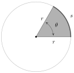
Nos Exercícios 57 a 62, use o resultado do Exercício 56 para calcular as áreas dos setores circulares com os ângulos centrais e raios dados.
- $12\pi$ unidades quadradas
- $\theta = \dfrac{5\pi}{4}, \; r = 100$resposta$6250\pi$ unidades quadradas
- $\theta = 330^{\circ}, \; r = 9.3$resposta$79.2825\pi \approx 249.07$ unidades quadradas
- $\theta =\pi, \; r = 1$resposta$\dfrac{\pi}{2}$ unidades quadradas
- $\theta = 240^{\circ}, \; r = 5$resposta$\dfrac{50\pi}{3}$ unidades quadradas
- $38.025 \pi \approx 119.46$ unidades quadradas
- Imagine uma corda amarrada ao redor da Terra no equador. Mostre que você só precisa adicionar $2\pi$ pés de comprimento à corda para levantá-la um pé acima do solo ao redor de todo o equador. (Você NÃO precisa saber o raio da Terra para mostrar isso.)
- Com a ajuda de seus colegas de classe, procure uma prova de que $\pi$ é, de fato, uma constante.